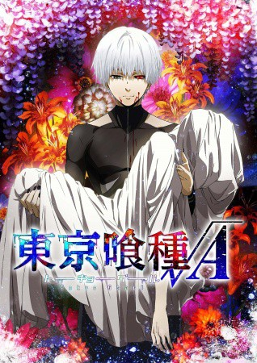

")
 
 IMDB-Wertung: 8.0 / 10
IMDB-Wertung: 8.0 / 10  Metascore:
Metascore: 
In Tokyo treiben Ghule ihr Unwesen. Wenn es dunkel wird, greifen sie unschuldige Bürger an und ernähren sich von ihrem Fleisch. Äußerlich sind sie von ihren Mitmenschen nicht zu unterscheiden. Und noch schlimmer: Sie leben mitten unter uns! Wer weiß, vielleicht hat das nette Mädchen aus dem Café oder der Nachbar von nebenan eine kleine Schwäche für Menschenfleisch?!So ist es kein Wunder, dass Bücherwurm und Erstsemester Ken mitten in den Armen einer Ghula landet. Die süße Rize ist zu toll um wahr zu sein: Ihr erstes Date mit Ken findet sogar in einem Buchladen statt! Doch beim Abschied offenbart sie ihre wahre Natur und greift Ken an. Ken überlebt die Ghul-Attacke durch einen unglaublichen Zufall – jedoch mit schweren Verletzungen. Damit er weiterleben kann, müssen ihm die Organe seiner Angreiferin transplantiert werden. Anfangs geht sein Leben recht normal weiter, doch nach und nach entdeckt er einige Ungereimtheiten an sich und entwickelt seltsame Gelüste ...
Jahr: 2015
Dauer: 24 Minuten
FSK: 16
Land: Japan Studio: AV Visionen FilmverleihTonspuren: DD2.0 - ,
Untertitel: Deutsch,
Auflösung: 720p (1280x720) Größe: 297 MB
Genre: Action, Horror, Drama, Animation/Trick, TV-Serie
Regisseur: Shin Matsuo, Shûhei Morita
Drehbuch: Phoenix Film
Soundtrack:
Darsteller:
 Mamoru Miyano als Shuu Tsukiyama
Mamoru Miyano als Shuu Tsukiyama Katsuyuki Konishi als Koutarou Amon
Katsuyuki Konishi als Koutarou Amon Yûichi Nakamura als Renji Yomo
Yûichi Nakamura als Renji Yomo Maaya Sakamoto als Eto
Maaya Sakamoto als EtoDatei: X:\HD-Anime-Serien\Tokyo Ghoul\Tokyo Ghoul S02 - Root A\Tokyo Ghoul Root A E01 Neue Kraft.mkv seit 01.07.2016
Festplatte: Gemischt-01+Anime
 Es gibt insgesamt 67 Filme in der Gruppe 'HD-Anime-Serien'
Es gibt insgesamt 67 Filme in der Gruppe 'HD-Anime-Serien'